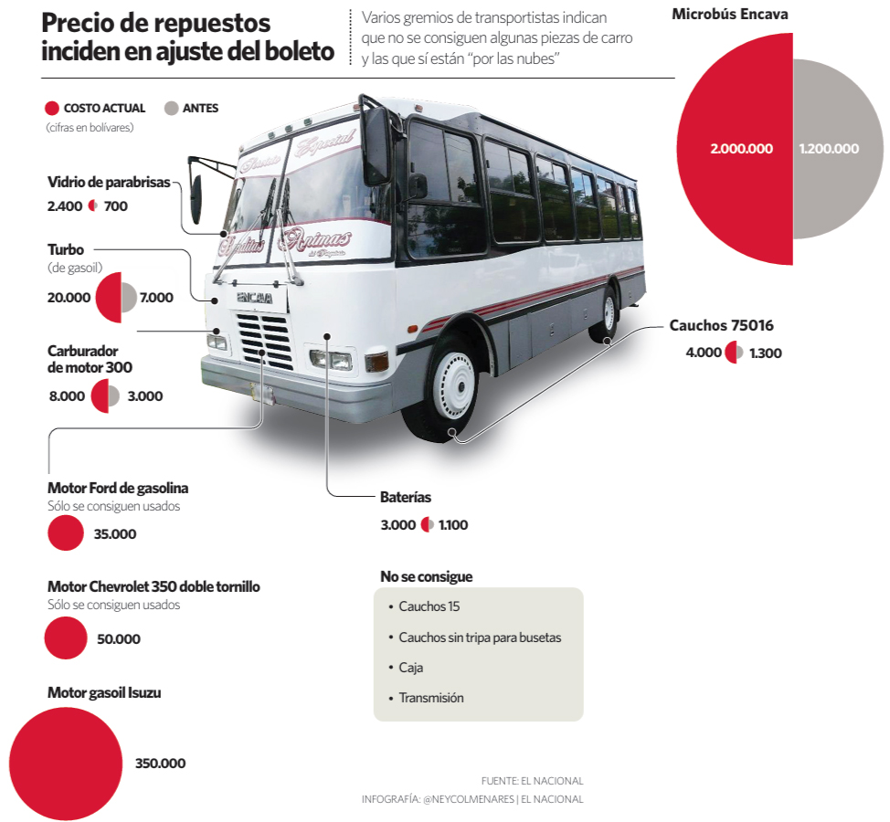

Precio de repuestos inciden en ajuste del boleto
Editorial Infographic / Economic Data VisualizationContext
This infographic examines how rising vehicle spare parts costs impact public transportation fares. Transport unions reported shortages of key components and significant price increases, directly affecting operating costs.
The objective was to show how these costs accumulate and influence fare adjustments.
Challenge
The information combined real-world objects, price comparisons and availability constraints. The challenge was to present multiple components and their cost variations in a way that remained clear and visually structured.
Design Approach
A photographic base of a bus is used as the central visual anchor. Individual components are highlighted and connected with labels that show price differences between past and current values, using color coding to distinguish them.
Additional elements such as proportional circles and comparison charts reinforce the magnitude of price increases and overall cost impact.
Information Structure
The layout is organized around the vehicle as the central element, with annotations distributed around it. Each label provides cost comparison and availability information, allowing the reader to understand both individual component increases and their cumulative effect on transportation costs.
